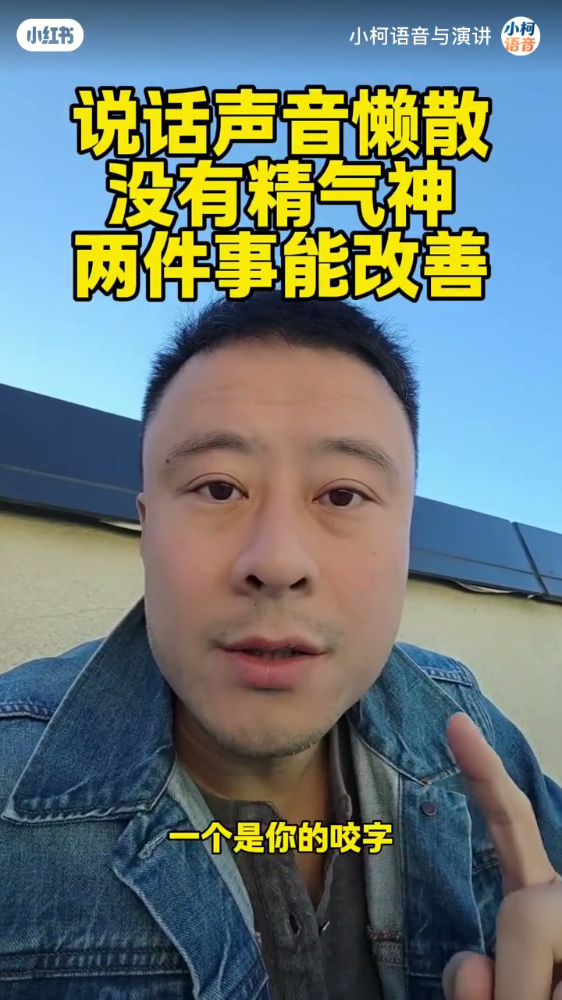
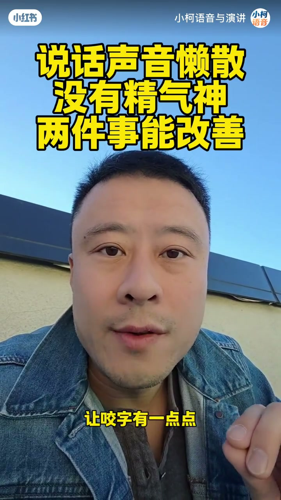

内容要点
「小柯语音与演讲」约1分13秒竖屏口播：若说话声音懒洋洋、没有精气神，可以从「咬字」和「声音」两个维度提升——先把双唇与舌头的力度加起来，咬清每个字的边缘；再把声音往远处送，像抛物线把珠子扔出口腔。片尾收束为：送远感带来优雅感，精气神与形象感也会跟着改善。下列实录按时间线展开；观点属作者教学建议。
知识结构
声音懒洋洋、没精气神时，别空练嗓，先拆成咬字与声音两个维度。
力度加强，避免松松垮垮；双唇舌头有力量感，咬字略带斩钉截铁。
别让声音一说就落地结束；可带一点拖音，像抛物线扔珠子，送远后才有优雅感与精气神。
两件事：咬字加力咬清边缘，声音按抛物线送远；作者认为精气神与形象感会因此改善——属可练习的表达习惯，非嗓音医学结论。
00:00–00:10懒洋洋没精气神：先定两个维度
视频开场直接点题：如果你也觉得自己说话时声音懒洋洋、没有精气神，作者给出的入口不是「练嗓条件」，而是「两个维度」——一个是咬字，一个是声音。顶栏黄字标题也同步写着「说话声音懒散 没有精气神 两件事能改善」，把整条短片的结构提前钉死。
「那你可以从两个维度去提升——一个是你的咬字，一个是你的声音。」

00:10–00:31第一件事：咬字加力，把字的边缘咬清楚
维度一落在咬字力度。作者要求把咬字「力度加强一点」，过程中不要松松垮垮；否则每个字其实都没真正咬清楚，字的边缘也不清晰。操作落点很具体：双唇和舌头的力量感要加强，让咬字带一点「斩钉截铁」的感觉。
这一段的关键不是「说大声」，而是口腔动作有边界——字咬实了，听感才不会散、不会懒。

00:31–01:13第二件事：声音送远，像抛物线扔珠子
维度二转向声音的运行方式：讲话时要把声音「送远」。反面示范是声音一出口马上结束、缺少送出去的感觉。作者给了一个朴素理解——可以有一点点拖音，让声音稍微往远处「打远」一些。
隐喻更直观：声音似乎像抛物线；把自己的声音当成一颗颗珠子，从口腔扔出去、往远处送。当声音有了送远感，而不是一下一下掉到地面上，听感会多出「优雅感」；讲话时整个人的精气神和形象感，也会因此得到一定改善。
「把自己的声音当做一个一个的珠子，从自己的口腔扔出去，往远处送出去的感觉。」
完整转录（34段）
以下文本由 Whisper medium 模型自动转录，已做简体转换与少量术语校正，可能仍有识别误差。
如果你也感觉自己在说话的时候声音懒洋洋的
说话没有精气神
那你可以从两个维度去提升
一个是你的咬字
一个是你的声音
咬字是要求我们的咬字的力度要加强一点
让自己在咬字的过程之中
不要是这种松松垮垮的这种感觉
这种感觉的话你的每一个字
其实都没有真正的把它咬清楚
没有把它的这个边缘说得很清晰
所以双唇和舌头的这个力量感
一定要加强一些
让咬字有一点点斩钉截铁的感觉
第二个就是在我们讲话的时候
这个声音一定要把它送远
你不要感觉这个声音是这样的一个状态
这个人让他一说的话
马上这个声音马上就结束了
而是没有这个声音送出去的感觉
但是你把每一句话适度的
朴素的理解可以有一点点拖音的感觉
让这个声音稍微往远处打远一些
有一个似乎像抛物线一样
把自己的声音当做一个一个的珠子
从自己的口腔扔出去
往远处送出去的感觉
那么当你的声音有了这种送远的感觉
而不是一下一下这样的一个
掉到地面上的感觉的时候
你的这个声音就有了一个优雅感
而你在讲话的时候
整个人的精气神和这种形象感
也就会因此得到一定的改善